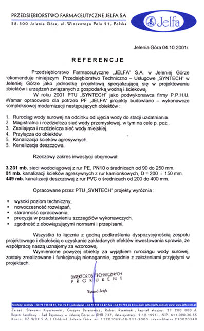
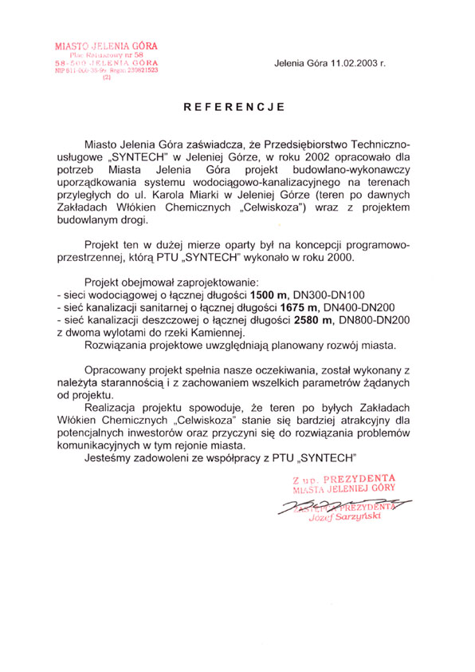
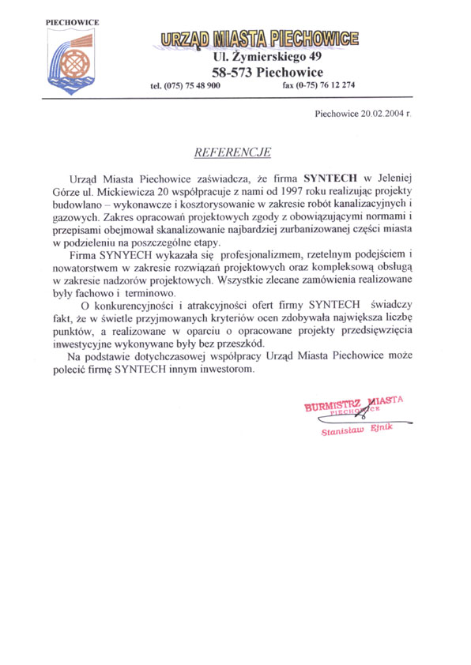
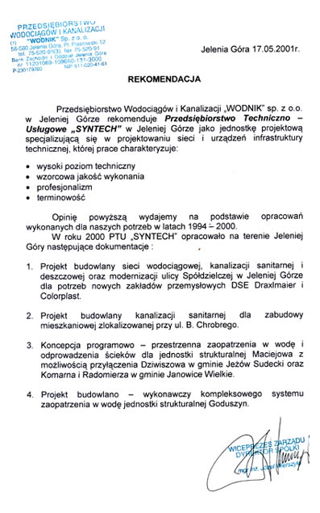
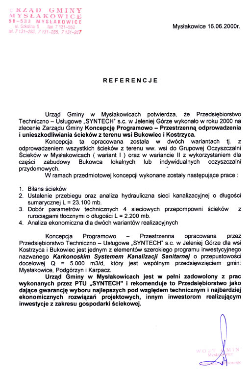
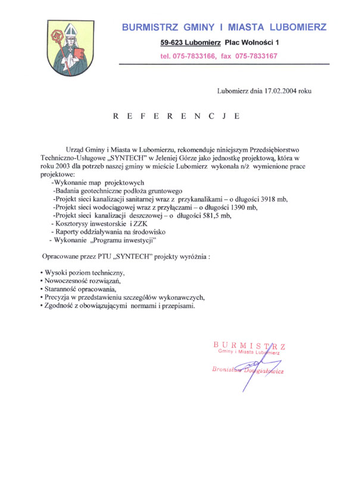
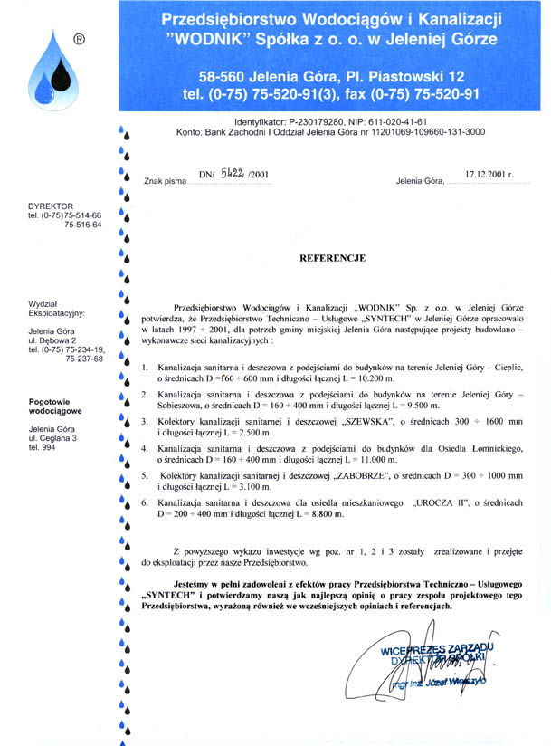

tysięcy metrów
sieci wodociągowych

Urząd Gminy w Mysłakowicach

Miasto
Jelenia Góra

Przedsiębiorstwo Wodociągów i Kanalizacji „WODNIK” w Jeleniej Górze

Przedsiębiorstwo Farmaceutyczne Jelfa S.A. Jelenia Góra

Urząd Miasta
Piechowice

Burmistrz Gminy i Miasta Lubomierz

Przedsiębiorstwo Wodociągów i Kanalizacji „WODNIK” w Jeleniej Górze